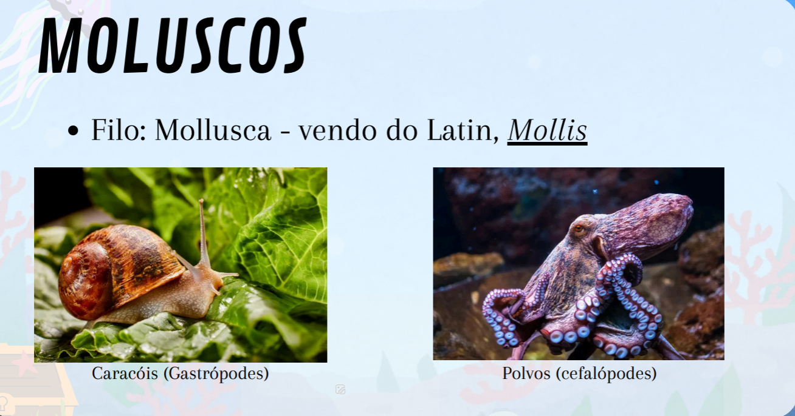

Atividade favorita de Biologia

A tarefa sobre o Reino Animal foi bastante legal pelo fato de ser um tema que eu gosto muito que e reino animal e permite aprender de forma prática sobre a diversidade dos moluscos e anelídeos, explorando suas características, habitats e importância ecológica, Não apenas esses mais outras especies de animais apresentadas por outros gp.